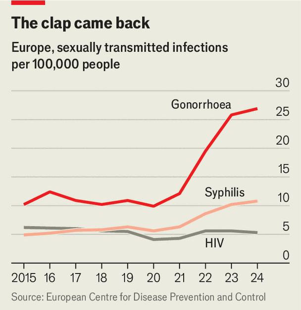

Sexually transmitted infections are surging in Europe
To restrain them, countries must increase testing and reduce stigma
Aug 13th 2026
TRACKING sexually transmitted infections (STIs) is not easy. Many who carry them show no symptoms. Testing is patchy. And risky behaviour tends to go unnoticed, since sex (thankfully) is usually performed in private. But public-health authorities do their best, and in recent years they have reported a sharp increase in cases of STIs in Europe.
Rates are up dramatically over the past decade (see chart), though they dipped during the pandemic because of a combination of less diligent surveillance and less casual shagging. After 2021 they leapt upwards. In May the European Union’s Centre for Disease Prevention and Control (ECDC) reported that in 2024, the most recent year for which it has figures, there were some 100,000 cases of gonorrhoea in Europe, over three times as many as in 2015. Cases of syphilis more than doubled, to around 46,000. Chlamydia is an exception: after peaking in 2022, prevalence has fallen back to the level of 2015.

The jump just after covid could be partly explained by testing facilities coming back online, says Dr Andrew Winter, an STI specialist in Glasgow. But the continued rise since then cannot. “There is a true increase in transmission happening,” says Dr Stela Bivol, who runs the World Health Organisation’s European office for STIs.
Why the venereal renaissance? Some blame reckless bed-hopping enabled by dating apps, but evidence is sparse. Users of such apps are more likely to have multiple partners, but that is partly because people seeking multiple partners are more likely to use them. Dr Henry de Vries, a specialist in the Netherlands, notes that dating apps long predate the rise in STI prevalence. “I would be cautious,” he says.
Another explanation is that people are using condoms less. But here too, the data are only suggestive. A study by the WHO of nearly 250,000 15-year-olds across Europe from 2014 to 2022 found a significant drop in reported condom use. But there are few data on population-wide condom usage among those aged 20 and up.
A more specific hypothesis is that using pre-exposure prophylaxis (PrEP), a pill that fights the spread of HIV, leads more men (especially gay men) to dispense with condoms. A study of patients at a British clinic between 2015 and 2019, by Louis MacGregor of the University of Bristol and colleagues, supported that idea.
What is not disputed is the danger. Sexual diseases are usually treatable, but they can be devastating if not caught soon enough. Over time, chlamydia and gonorrhoea can cause testicular infections in men and infertility in women. One of the grimmest phenomena noted by the ECDC is a jump in congenital syphilis, passed on by mothers to their babies. This is rare but often fatal. Between 2023 and 2024 the number of cases doubled to 140, with clusters in Bulgaria, Hungary and Portugal.
Fighting STIs starts with working out where they are spreading. Young men do not seem to be the focus. In the latest data, for 2023-24, gonorrhoea rates fell among males aged 15-24 but rose among older ones. Among women, gonorrhoea rates fell, while syphilis rates rose by 15%. The biggest increase was among those aged 20 to 34. Syphilis transmission seems to be especially high among men who have sex with men, but rates among heterosexual men and women have risen sharply too.
Geographically, the increase spans the continent. Some of the steepest rises in gonorrhoea in 2023-24 were in Bulgaria, France and Italy, while Belgium and Hungary saw sharp increases in syphilis. Some poor countries report misleadingly low rates because of inadequate surveillance: in Romania, with a population of 19m, just 24 chlamydia cases were recorded in 2024.
The ECDC says better monitoring is needed, including information on the proportion of vulnerable groups that are tested in each country. Only a third of European countries provide this data. Knowing whether infections were passed on through homosexual or heterosexual contact could help shape better public-health decisions, says Dr Otilia Mardh, an epidemiologist at the ECDC.
Countries with widespread testing have a different problem. Doctors treat STIs with antibiotics, which leads them to develop immunity. Gonorrhoea already has highly resistant strains. Chlamydia and syphilis do not, but the decision to treat involves weighing benefits against risk. The Netherlands recently cancelled chlamydia screening for people with no symptoms, after studies showed that asymptomatic infections were less likely to damage fertility than had been feared.
Even with syphilis, resources could be used more efficiently. Congenital syphilis, which is easily treated, could be tackled with focused testing during pregnancy. Most EU countries test women for syphilis in the first trimester, but fewer than half test those who are most at risk in the third trimester or at delivery.
One of the obstacles to reducing STIs is that many societies care less about the groups most at risk: men who have sex with men, migrants and sex workers. In parts of central and eastern Europe new HIV infections continue to rise, even as they have fallen elsewhere in the world. Stigma and discrimination, which deter people from seeking testing and treatment, are partly responsible.
But higher rates can themselves prompt a response. In Hungary a sharp rise in reports of congenital syphilis, which went from three cases in 2020 to 91 in 2024 (in part due to greater testing), led to much more rigorous screening. Dr Mardh notes that a recent study in which she took part found a drop in reported chlamydia cases in seven countries in 2023-24. A spike in gonorrhoea rates in the years before had led to public-health campaigns. Sometimes fear is the best medicine.■